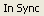

As you change the contents of the Java source file with the Java Visual Editor open, it performs incremental analysis of the changes to determine how the change affects the Java beans.
Changes to the code can be made in the Source view included with the visual editor, or within another editor open on the same file within the workbench. When a change occurs in the code, the visual editor synchronizes these changes with the model of the Java beans displayed in the Design view, the Java Beans view, and the Properties view.
If a situation occurs where the model of the Java beans is out of step with the source code for any reason, you can click the reload button on the main toolbar.
As you use the visual editor there are two internal models that are maintained. The first model is a representation of the Java beans that is used by the Java Beans view, the Properties view, and the Design view. The second model is the source that represents the code that, when compiled and executed, will re-create the Java beans in a runtime VM. As you make changes to either model, the visual editor maintains the other model for you by performing synchronization. You can see the status of the synchronization of the two models in the status bar  at the bottom of the workbench.
There is a performance overhead associated with synchronizing the two models, so the processes to do this are run in background threads on a delay timer. If changes are made to a model, by either manipulating the Java beans in a view or by editing the source, the other model needs to be updated or it will no longer be synchronized. To show that the models are not synchronized, the label changes from In Sync to Out of Sync.
If synchronization takes place too frequently and is degrading performance, the time that the synchronizer waits can be altered using on the Code Generation page of the visual editor preferences . You can change the delay time used to make updates from the source to the Java beans. The initial value is 1000 milliseconds. This is how long the visual editor waits after you have updated the source code before updating the graphics in the Design view.
You can disable the synchronization by pressing the pause button on the main visual editor toolbar.
While the synchronizer is paused, you can make changes to the source without any overhead of parsing source, but you can no longer make changes to the Java beans model. All edits made using the Design view, the Java Beans view, or the Properties view will not be applied. When you have finished updating the source, you can resume the synchronizer by pressing the reload button on the main toolbar. The reload button displays when synchronization is paused.
If the visual editor determine that the source contains errors, the toolbar button will show the parsing error button. The visual editor will wait until the errors are fixed before trying to synchronize again.
Parent topic: Source code generation in the visual editor